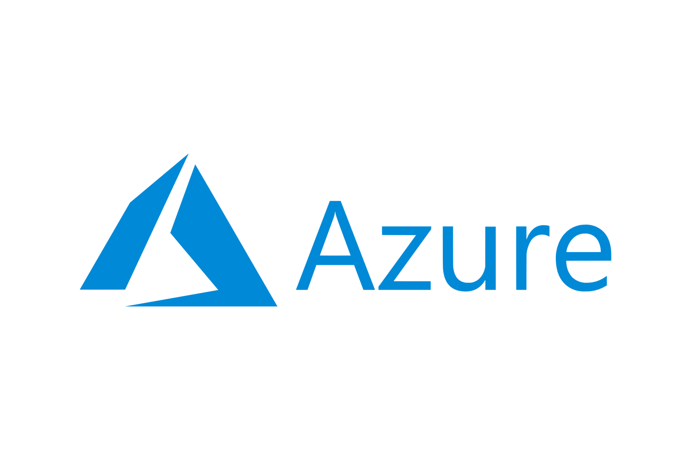

Sankir Technology
Accelerating Data Engineering Solution on Cloud
Expertise in Data Engineering on Cloud
-
Data Engineering pipeline – Architecture,
Orchestration, Optimization and Monitoring - Databricks, Apache Airflow
- Big Data - Apache Spark, Hadoop, HDFS
- DWH - Google BigQuery, Snowflake and DBT
- 
Consultancy